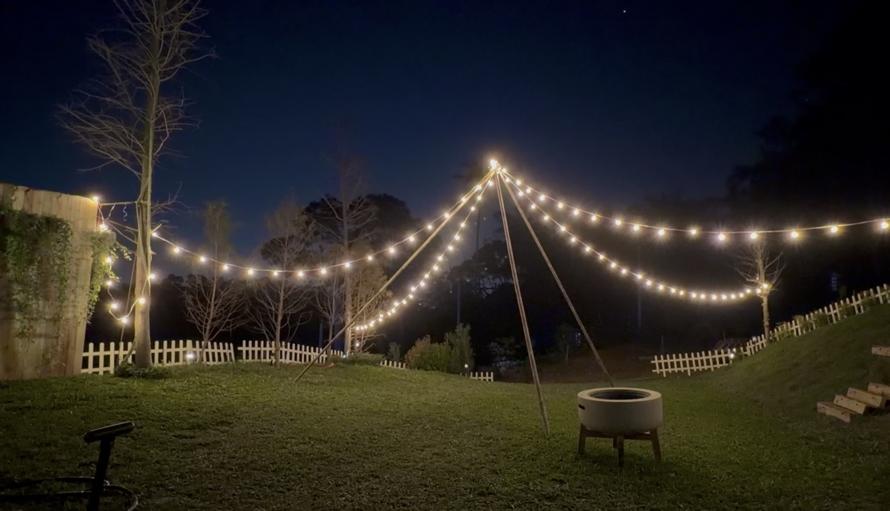

相較室內場地，森林系空間提供自然的聲音包覆與視線留白，讓聚會不必靠「更大聲」來填滿。
適合什麼樣的聚會？
小型生日、朋友聊天、家庭週末、靜態手作或音樂分享都很合適；關鍵是人數與動線要匹配場地的承載，避免過度擁擠。
與「森林露營」專文的差異
若你想更聚焦在住宿與林相感受，可讀 桃園森林露營體驗；若想從「活動企劃」角度思考，請見 森林系活動空間有什麼魅力。

森林裡最珍貴的「活動」，有時只是走路、發呆、聽風，以及好好吃一頓飯。
相較室內場地，森林系空間提供自然的聲音包覆與視線留白，讓聚會不必靠「更大聲」來填滿。
小型生日、朋友聊天、家庭週末、靜態手作或音樂分享都很合適；關鍵是人數與動線要匹配場地的承載，避免過度擁擠。
若你想更聚焦在住宿與林相感受，可讀 桃園森林露營體驗；若想從「活動企劃」角度思考，請見 森林系活動空間有什麼魅力。